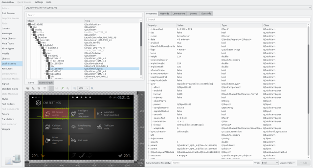
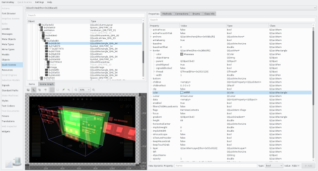
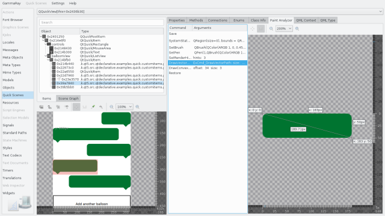
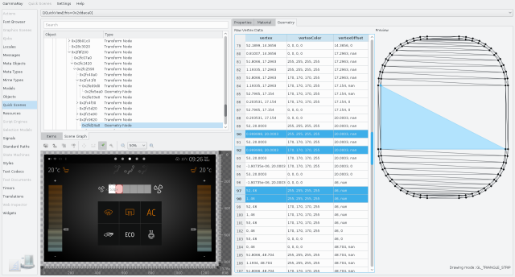

The Qt Quick 2 inspector is the tool of choice for investigating issues with a Qt Quick user interface. This includes:
If your target has multiple QQuickView instances, the combo box at the top can be used to switch between them.
The item tree is shown on the top left, and it contains the visual hierarchy of QQuickItem instances in the currently selected Qt Quick scene. This does not necessarily match the QObject parent/child hierarchy. The right side contains universal Object Inspection view.

You can navigate to the object browser (and other applicable tools) using the context menu on the item tree. Similarly, you can navigate to the source code locations instantiating the current item, or the file declaring the type of the current item (if available).
The remote view is shown to the lower left in the Qt Quick 2 inspector. Besides giving you a zoomable view of the rendered content, it provides a number of additional features:

The diagnostic render modes include:
Diagnostic render modes can be enabled individually, both on the target and the GammaRay client via the Quick Scenes > Decorate Target menu option, or the corresponding remote view toolbar action.
When selecting a QQuickPaintedItem sub-class in the item tree, the paint analyzer tab is activated in the property view on the right.

The Paint Analyzer allows you to inspect every single QPainter command that is executed, and look at the visual result after each step.
When using the Qt Quick software renderer, a full-scene paint analysis is also available via the Quick Scenes menu (requires Qt 5.9.3 or newer).
The scene graph view shows you the internal representation used by Qt Quick to render the current scene. This is particularly useful for debugging performance issues related to batching and rendering of custom QQuickItem sub-classes.

For nodes in the scene graph you have access to:
The following examples make use of the Qt Quick inspector: